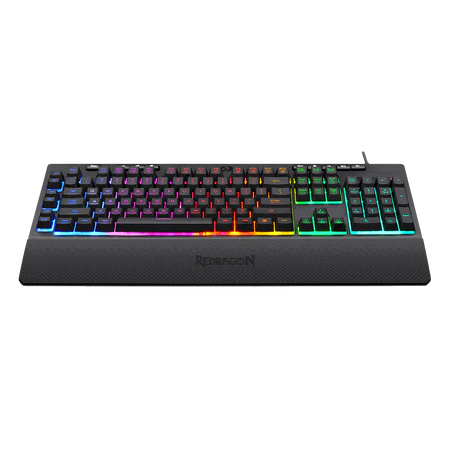
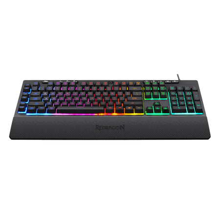

TECLADO GAMER REDRAGON SHIVA RGB, K512RGB-PT
À vista:R$ 179,99
ou em ate 12x de R$17,65 sem juros no cartão
Informações do produto
O Redragon Shiva é feito especialmente para aqueles usuários que buscam um teclado silencioso para uso durante a jogatina Sem economizar na iluminação, o Shiva traz um sistema RGB completo para os gamers que buscam estilo no seu equipamento Misturando conforto e funcionalidades, este modelo possui 6 teclas macro dedicadas, apoio de pulso magnético e teclas multimídia